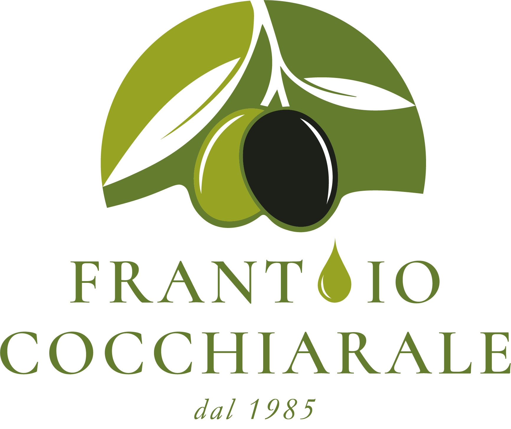
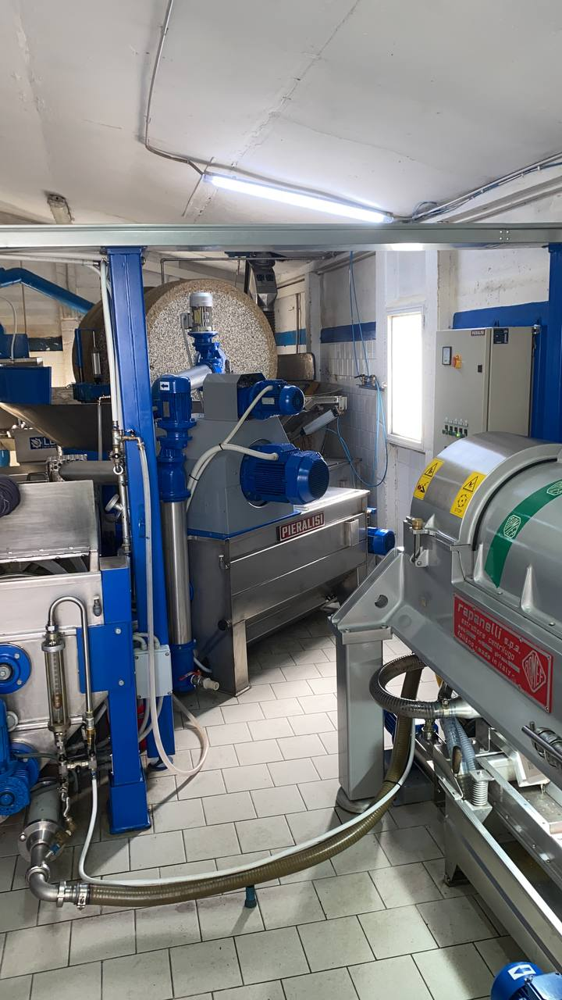
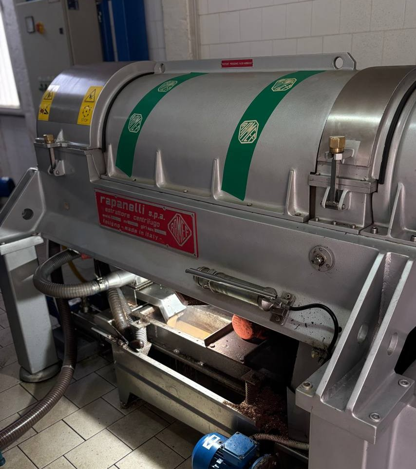
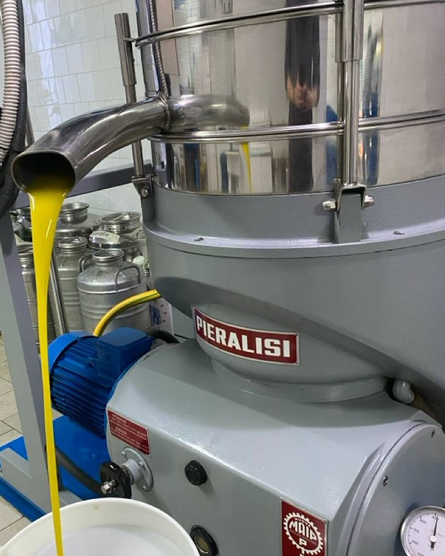

01
Prima fase
Defogliazione e lavaggio
Le olive vengono private delle foglie e sottoposte a lavaggio per eliminare terra e impurità presenti sulla superficie.

Da oltre quarant'anni trasformiamo le olive del territorio lucano in olio extravergine di oliva, unendo cultura olearia, esperienza familiare e tecnologia.
Il Frantoio Oleario Cocchiarale nasce nel cuore di Castronuovo di Sant'Andrea, in un territorio dove l'olivo rappresenta da generazioni cultura, lavoro e tradizione.
Conosci la nostra storia
01La nostra avventura nasce nella metà degli anni '80 a Castronuovo di Sant'Andrea, in un luogo storicamente conosciuto nel dialetto locale come "trappiti".
Era questa la zona del paese destinata agli antichi frantoi del borgo. Proprio nei locali adiacenti all'antico mulino venne installato il primo impianto molitorio.
Con il passare degli anni l'attività si è consolidata sotto la guida di Angelo e Sinforosa, affiancati dalla famiglia.
La tradizione è rimasta il nostro punto di partenza, mentre l'innovazione tecnologica ci ha permesso di migliorare continuamente il modo in cui lavoriamo la materia prima.
La storia del nostro frantoio affonda le sue radici nella frangitura tradizionale eseguita mediante imponenti ruote in pietra di granito, note in ambito professionale come molazze.
Le molazze in pietra di granito esercitano una pressione soffice e graduale sulle olive, frantumando la polpa senza lacerare eccessivamente il nocciolo. Questo metodo tradizionale evita il surriscaldamento della pasta durante la prima fase di frangitura, preservando intatti gli aromi più sottili, la dolcezza e i profumi naturali dell'oliva appena raccolta.
Materiale inerte ed ecologico che garantisce la massima igiene e non altera il sapore originale dell'olio.
Azione meccanica lenta che evita lo stress termico e l'ossidazione precoce della pasta d'olive.
Nel 2018 abbiamo ammodernato l'impianto con un sistema integrale a ciclo continuo che combina l'affidabilità del Decanter Rapanelli con la separazione finale del Separatore Pieralisi.

Esegue la prima estrazione e separazione centrifuga della pasta di olive dividendo olio, sansa e acqua di vegetazione, mantenendo costantemente la temperatura sotto i 27°C.

Affina e centrifuga le ultime micro-gocce d'acqua di vegetazione per restituire un olio extravergine limpido, fluido, denso e privo di qualsiasi impurità.
Temperatura sotto controllo per proteggere polifenoli, vitamina E e note aromatiche.
Lavorazione rigorosamente separata per ogni agricoltore con la massima trasparenza.
Massima igiene alimentare in ogni fase del contatto con il prodotto.
Ogni fase della lavorazione è importante. Dalla ricezione delle olive alla separazione finale, il nostro obiettivo è preservare la qualità della materia prima.
Le olive vengono private delle foglie e sottoposte a lavaggio per eliminare terra e impurità presenti sulla superficie.
La frangitura meccanica o tramite molazze in pietra rompe la struttura dell'oliva preparando la pasta alla successiva fase.
La pasta viene lavorata lentamente a temperatura controllata, mantenendo le condizioni necessarie per preservare profumi e caratteristiche dell'oliva.
Il decanter Rapanelli separa le diverse componenti della pasta attraverso un processo centrifugo continuo a freddo.
L'olio viene sottoposto al passaggio finale nel separatore Pieralisi per ottenere un prodotto limpido, puro e pronto da gustare.
Un olio nasce prima di tutto dalla qualità delle olive. La nostra lavorazione punta a valorizzare le caratteristiche del territorio, rispettando profumi, aromi e identità della materia prima.
Scopri il territorioLa Basilicata custodisce un patrimonio olivicolo ricco e variegato. Nel nostro frantoio lavoriamo principalmente olive provenienti dal territorio lucano, valorizzando le diverse cultivar e le loro caratteristiche.
Ogni varietà porta con sé un profilo differente, legato al territorio, alla stagione e al modo in cui viene coltivata e raccolta.
Una delle cultivar più rappresentative dell'olivicoltura lucana.
Una varietà storicamente legata al territorio della Basilicata.
Cultivar diffusa e apprezzata per la sua versatilità.
Una delle varietà più conosciute dell'olivicoltura italiana.
Offriamo il servizio di molitura conto terzi per produttori e agricoltori. La lavorazione viene gestita con attenzione alla materia prima e nel rispetto delle esigenze di ogni produttore.
Prenota la molituraIl nostro modo di lavorare nasce dall'equilibrio tra esperienza, tecnologia e rispetto per il territorio.
Una storia familiare costruita nel tempo e profondamente legata alla cultura olearia lucana.
Decanter Rapanelli e Separatore Pieralisi per una lavorazione accurata.
Temperatura controllata sotto i 27°C per preservare al meglio le virtù nutrizionali.
Valorizziamo le olive e le cultivar che raccontano la nostra terra.
Contattaci per informazioni sulla molitura, sul servizio conto terzi o per conoscere meglio il nostro frantoio.